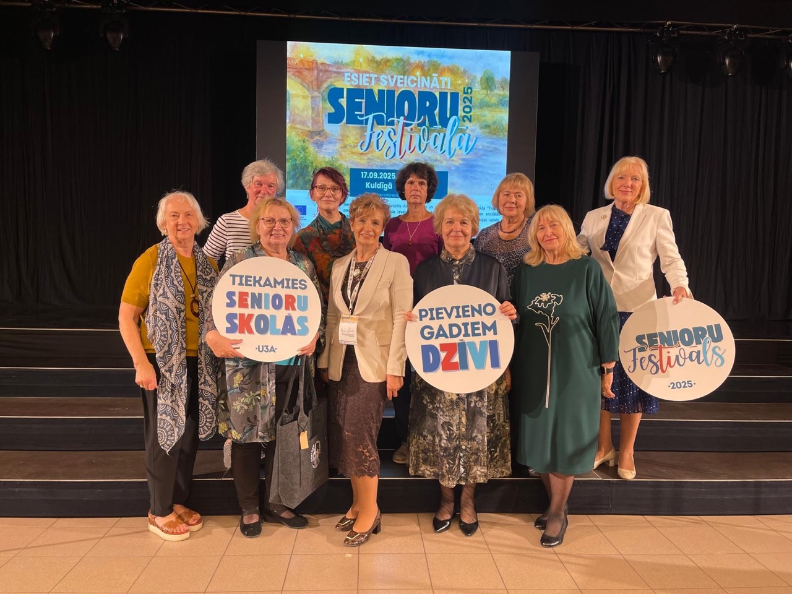

🎉 Senioru festivāls Kuldīgā! 17. septembrī notika Trešās paaudzes universitāšu NVO festivāls “Mūžs kā zināšanu ceļš”, kas pulcēja senioru skolas, ekspertus un viesus no Latvijas, Portugāles, Polijas, Lietuvas un Igaunijas.... See more

Laipni lūgti Vecmāmiņas.lv !

25. maijā, ceriņu ziedēšanas laikā, mūsu dzimšanas diena!
14 gadi
Skaitlis “14” – ko tas nozīmē?!
- Cipars “1” – jauns sākums
- Cipars “4” – struktūra un stabilitāte
Tātad “14” = LĪDZSVARS STARP ATTĪSTĪBU UN PAMATIEM! Tieši tā jūtamies! 😊
14. dzimšanas dienas fotogrāfijas


! ! !
Šobrīd lapa ir izstrādes procesā – lēnām papildinām saturu, lai padarītu to vēl noderīgāku un interesantāku. Sekojiet līdzi jaunumiem un aktualitātēm!